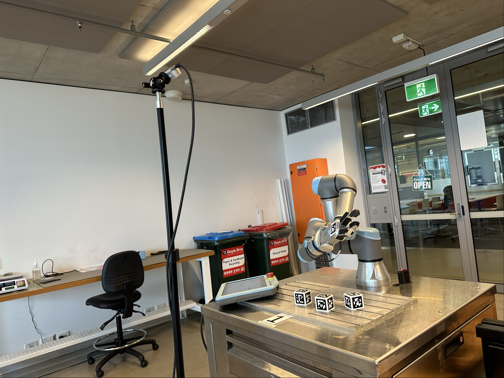
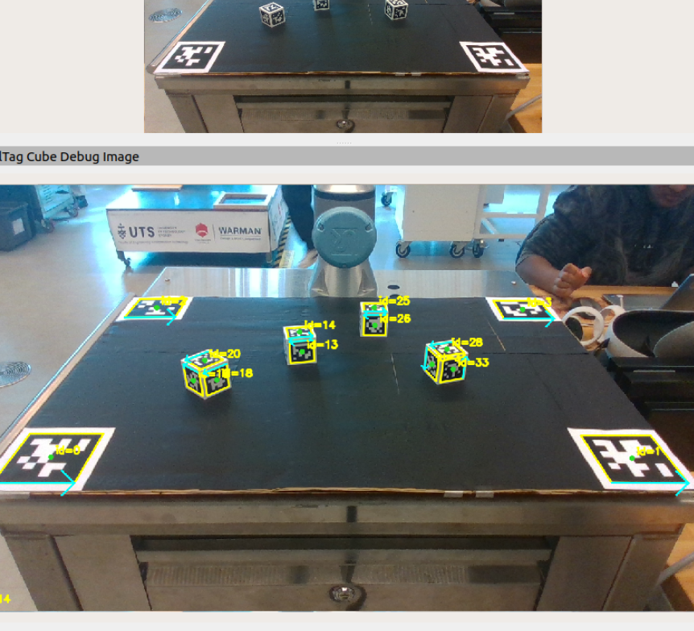
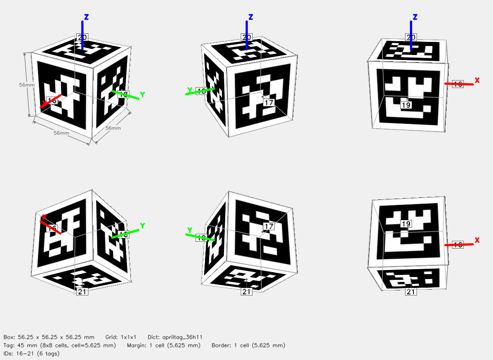

Original System — Nic Sabatini
AprilTag perception & calibration (base HoloAssist)
The base HoloAssist perception system was built by Nic Sabatini and validated on the real UR3e robot. It provides the sim-to-real bridge that both projects share: the camera→robot coordinate transform.
How it worked
- RealSense D435i streams RGB + depth to apriltag_ros
- workspace_board_node detects 4 corner tags on a physical 700×500 mm board and runs SVD (Kabsch algorithm) to lock the
workspace_frameTF — RMS residual <0.02 m - cube_pose_node looks up AprilTag face tags (6 tags/cube, tag36h11 family) in
workspace_frameand publishes cube poses at 20 Hz - cube_pose_relay.py (Nic) bridges poses to
base_linkframe for the robot - CubePoseSubscriber.cs (Nic) subscribes in Unity for XR hologram overlay
- A RANSAC depth plane fitting fallback in
workspace_perception_nodeprovided marker-free depth-based detection when tags were unavailable
Eye-to-hand calibration (Nic)
Nic built a full calibration node (eye_hand_calibration_node.py) using OpenCV’s calibrateHandEye with the Park solver. The node observes an AprilTag attached to the end effector from multiple robot poses and solves the static camera→base_link transform.
- Sim mode: synthetic observations, validated Park solver at 0.4 mm accuracy
- Hardware mode: real apriltag_ros detections captured via ROS services
- Result: <2 mm reprojection error with 12–15 samples
- Saved to
~/.ros2/easy_handeye2/calibrations/— survives reboots





Full AprilTag perception documentation and calibration guide:
HoloAssist perception docs →
Calibration guide →